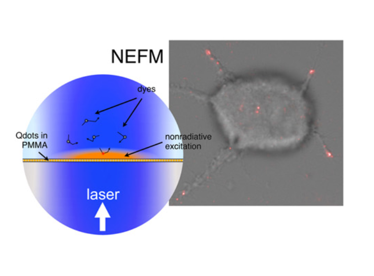
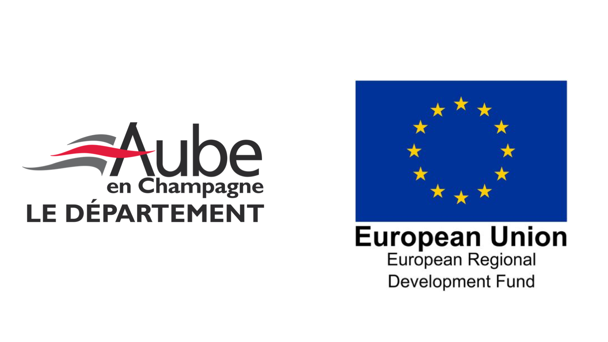
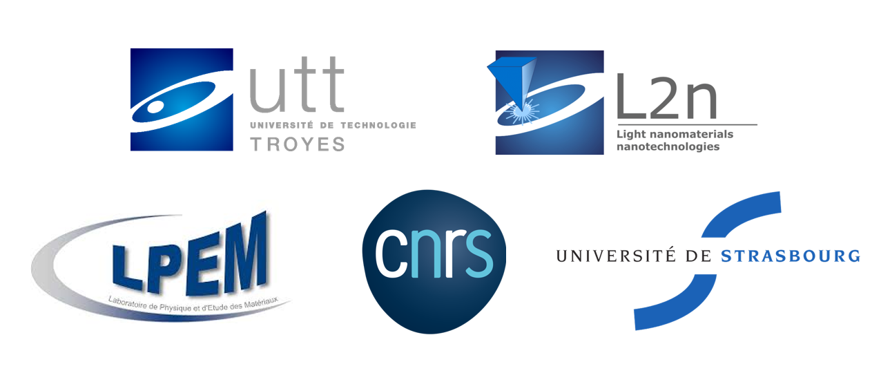

-

Micropatterning of Quantum Dots for Integrins Dynamic Study
As living cells adhesion and migration are currently still difficult to study at high precision, We will developp a new setup to overcome varied technical barriers in the way of constructing rigourous knwoledge on this phenomena.
Illustration of the excitation part of the imaging setup principle, here with QDs embedded in PMMA. The NEF picture results from imaging an MCF-7 cell. Red spots represent the contacts between the cell and the surface (bar = 10 µm). Extracted from the nanobiophotonics page of L2n website.
-

PhD planning
This PhD work is planned as following:
1. Synthesis of Quantum Dots (QDs) which, in the experimental setup, will be excitated optically to transfer energy to nearby fluorophores in a non radiative way (FRET).
2. Functionnlisation of the surfaces hosting the QDs.
3. Micropatterning of QDs conjugated with fluorophore-marked fibronectin (a protein of the extra cellular environnment involved in the adhesion process). Example of possible strategies on the image opposite.
4. Exploitation of the setup to explore adhesion and migration dynamics through formation and dissociation of focal points of adhesion (complex ligand-receptor formated by fibronectin-integrin).
-

SpaceInt Project Funding
This PhD project is situated at the intersection of the nanosciences, biophysics, and optics fields. It is funded by Aube Departmental Concil (CD10) and European Regional Development Fund (ERDF) for the 2019-2022 time period.
-

SpaceInt Partners
It is hosted at University of Technology of Troyes (UTT) under the supervision of Assistant Professor Cyrille Vézy and Associate Professor Rodolphe Jaffiol, in the L2n (Light, nanomaterials, nanotechnoly) laboratory.
It involves a collaboration between L2n and the Laboratory of Physics and Material Science (LPEM) of the Ecole supérieure de physique et chimie industrielle de la ville de Paris (ESPCI Paris), and the Laboratory of Bio-imaging and Pathologies (LPB) of the University of Strasbourg.